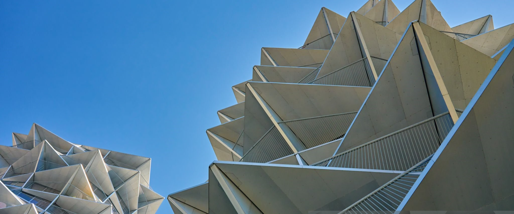
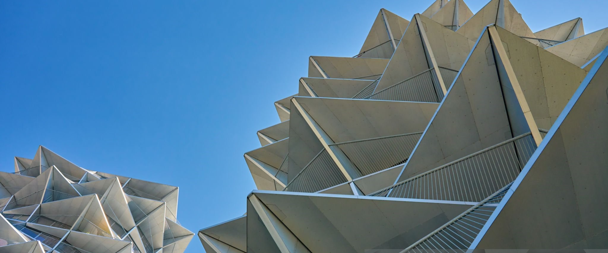

Why Visit Cophenhagen?
Cophenhagen: City of Harbor, Where Old Arcitecture meets Modern Design
Copenhagen’s origins date back to the early Middle Ages. It was founded as a fishing village in the 10th century. The name “Copenhagen” comes from the Old Danish Køpmannahavn, which means “merchant’s harbor.” The settlement grew in importance during the reign of King Absalon (12th century), who built a fortress on a small island in the city’s harbor, known as Slotsholmen. This fortress helped defend the city and solidified its status as a key location for trade and commerce.
Over time, Copenhagen expanded from a small fishing town to the capital of Denmark in the 15th century. In the 16th century, during the reign of King Frederick II, Copenhagen began to develop into a more fortified city with many of the buildings and structures still in place today, such as the Rosenborg Castle.
By the 17th century, under King Christian IV, Copenhagen became a prominent European city, with infrastructure development, including the construction of the Børsen (Stock Exchange) and the development of the Nyhavn harbor area. The city’s growth was further accelerated by industrialization and trade in the 19th and 20th centuries, solidifying Copenhagen as the cultural and political heart of Denmark.
Today, Copenhagen is a modern, cosmopolitan city, blending its rich history with innovation and sustainability.
CAFÉS
My favorite cafés in Cophenhagen
.jpg)
Piper Hus
A lively all-day café with an outdoor terrace that serves everything you could want from breakfast and brunch to evening cocktails.
Address:
Bypark, Frederiksborgvej 21, 4000 Roskilde
What I like about it
This is one of the best brunch spots in Lisbon but if you go at any time of day there will be something delicious on the menu!

Cafe Krôyers
A lively all-day café with an outdoor terrace that serves everything you could want from breakfast and brunch to evening cocktails.
Address:
Strandgade 87A, 1401 København
What I like about it
This is one of the best brunch spots in Lisbon but if you go at any time of day there will be something delicious on the menu!

The Artisan Copenhagen
A lively all-day café with an outdoor terrace that serves everything you could want from breakfast and brunch to evening cocktails.
Address:
Sortedam Dossering 45A, 2200 København
What I like about it
This is one of the best brunch spots in Lisbon but if you go at any time of day there will be something delicious on the menu!